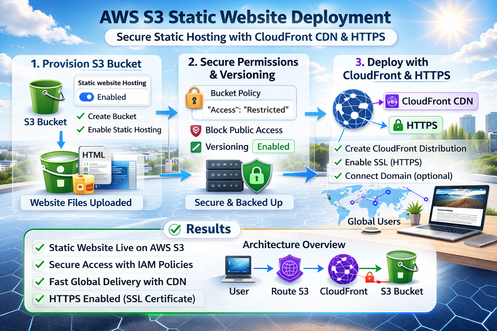

AWS S3 Static Website
Built an S3-hosted website to simulate real-world cloud hosting with secure configurations and scalability.
- Configured static hosting with secure permissions
- Applied IAM least-privilege access
- Prepared CDN integration with CloudFront
